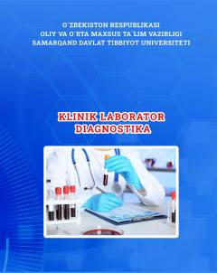

KLKlinik laboratoriya diagnostikasi asoslari va zamonaviy tekshiruv usullari bo'yicha darslik.
Ushbu darslik klinik laboratoriya diagnostikasi fani qonuniyatlari, zamonaviy texnologiyalari va tadqiqot usullarini o'z ichiga oladi. Kitobda qon tahlili, biokimyoviy tekshiruvlar, gormonal va immunologik tahlillar batafsil yoritilgan bo'lib, bo'lg'usi shifokorlarga kasalliklarga to'g'ri tashxis qo'yishda ko'maklashadi.